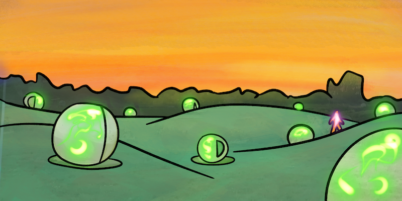
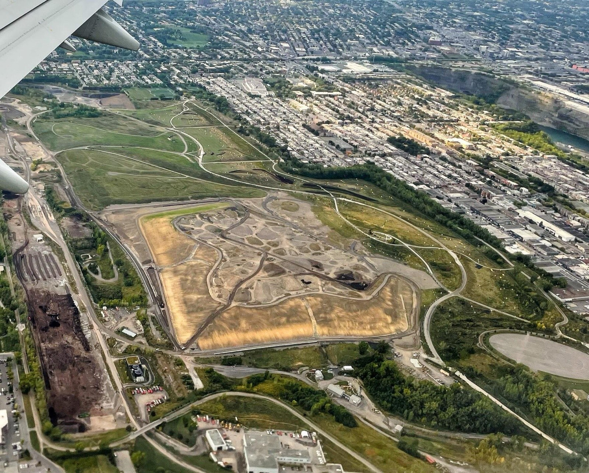
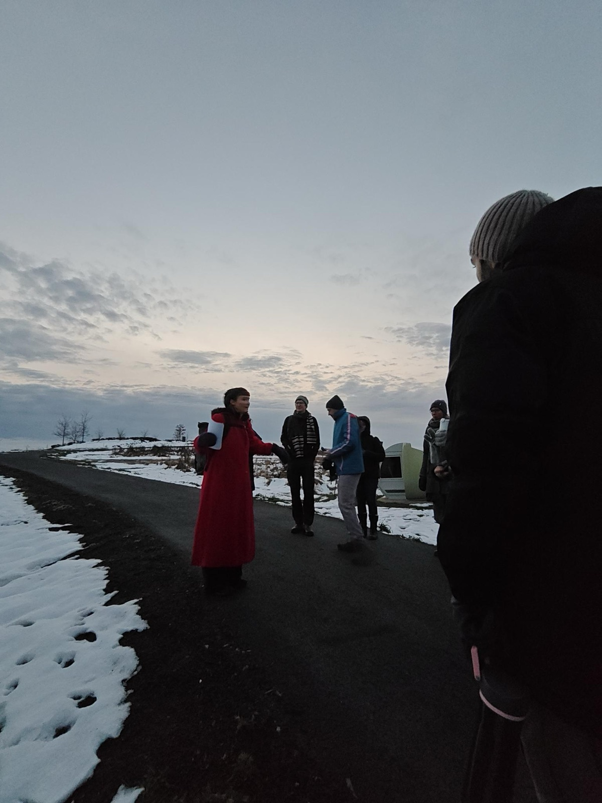
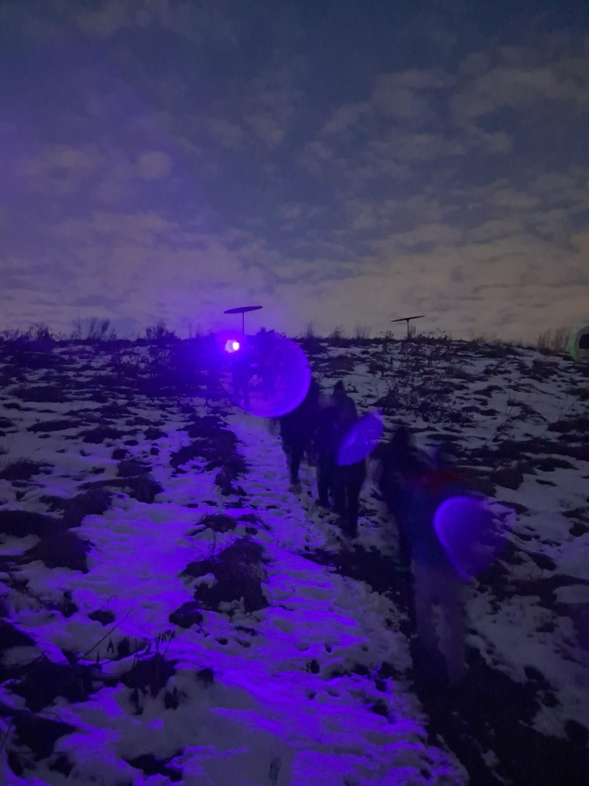
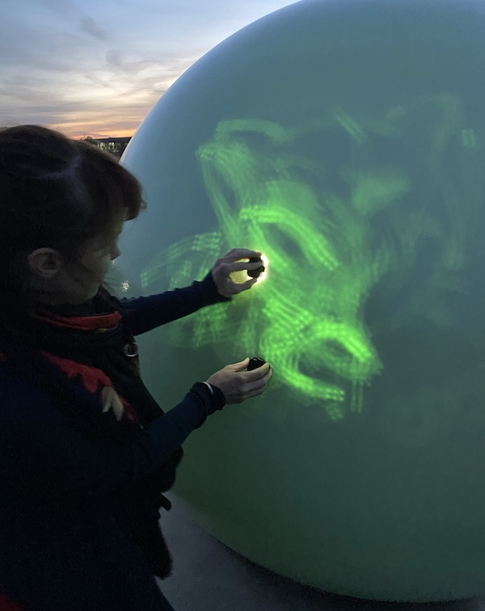
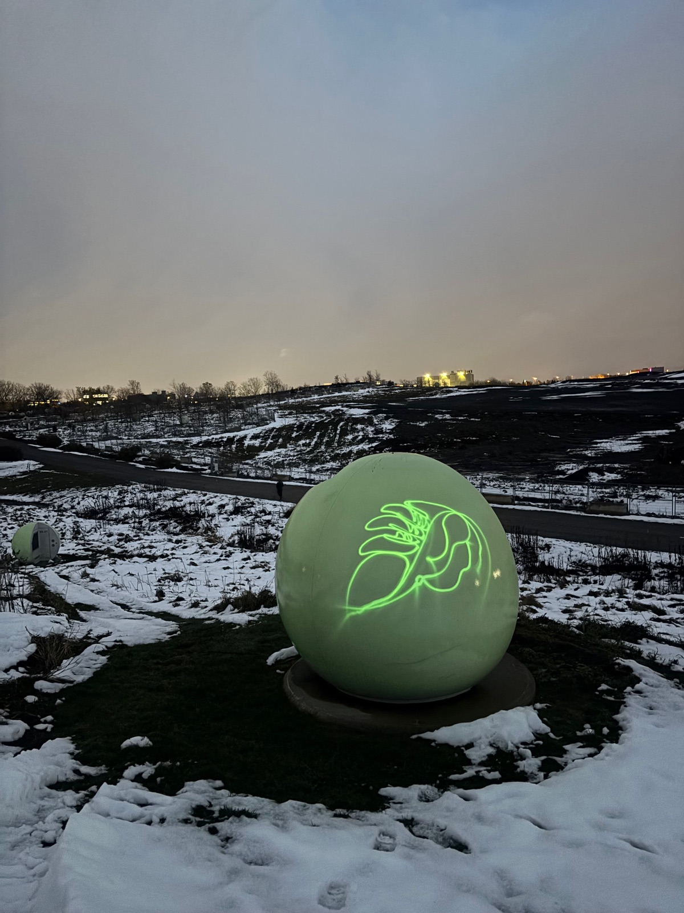
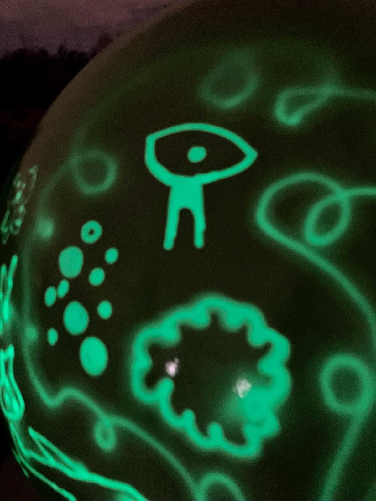
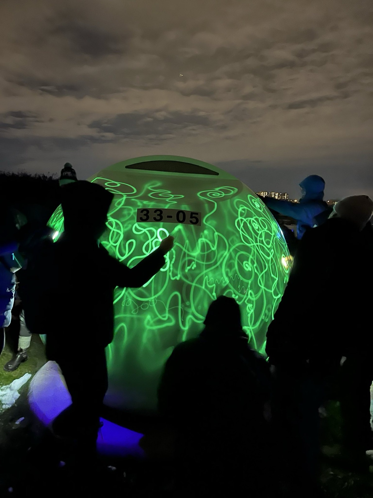
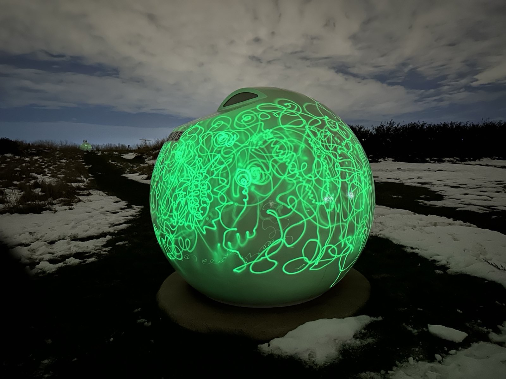
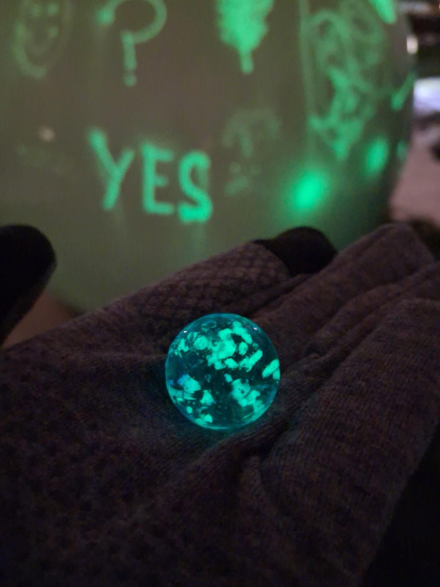

Orb

Orb, c'est du jeu expérimental au crépuscule, pour explorer les déchets, le territoire et la transformation. Un jeu-rituel que j'ai créé au parc Frédéric-Back, à Montréal, pour la première édition de la Semaine du jeu vidéo de Montréal.
Un soir de novembre, une quarantaine de personnes se sont donné rendez-vous à l'entrée du parc. Je les ai guidé·e·s dans un parcours à travers le parc, d'une orbe à l'autre. On a commencé par un rituel méditatif au coucher du soleil, à explorer ensemble ce qu'on jette, ce qu'on perd, ce qu'on laisse aller, et à peindre sur les orbes avec de la lumière. Puis, à la tombée de la nuit, le jeu est devenu plus rapide.
Le lieu
Le parc Frédéric-Back n'est pas un parc comme les autres. Avant, c'était une carrière de calcaire, puis un immense dépotoir municipal, fermé en 2009 et rouvert en parc en 2017. Sous nos pieds, il y a environ 40 millions de tonnes de déchets. La terre, là-dessous, est encore en train de digérer tout ça.

Les orbes ne sont pas des sculptures. Il y en a environ 250, dispersées sur les collines, mystérieuses au premier abord : des évents pour un processus actif qui se déroule sous nos pieds. Elles sont posées sur les puits qui captent le biogaz produit par la décomposition, un gaz récupéré et transformé en énergie. Les orbes, c'est la partie visible de quelque chose qui continue, jour et nuit, sous le gazon. Ce jeu ne peut se jouer qu'ici.
La marche au coucher du soleil
On a commencé à l'heure bleue, au bord du parc. Je me suis présentée, et on est parti·e·s ensemble, lentement, sur un parcours que j'avais tracé à travers le parc, en s'arrêtant à des orbes précises.

À chaque arrêt, on faisait un pas de plus dans le rituel, et on en apprenait ensemble davantage sur la terre sous nos pieds. Le reste, je le garde pour les personnes qui étaient là. Orbe après orbe, les marques s'accumulaient pendant que la lumière baissait.

Peindre avec de la lumière
Les orbes sont recouvertes d'une surface phosphorescente. On braque une lumière dessus, surtout une lumière UV, et la lueur reste. On peut donc dessiner avec de la lumière : les traits tiennent un moment, puis s'effacent tout doucement.


Au fil de la soirée, les orbes se sont couvertes de marques : des mots, des yeux, des visages, des fleurs, des gribouillis. Chaque orbe est devenue une archive de ce que le groupe avait dit tout haut, puis a lentement disparu dans le noir.



Repartir avec une bille
À la fin, chaque personne est repartie avec une bille qui brille dans le noir. Une toute petite orbe, chargée de lumière pendant la soirée, qui continue de briller une fois rendue à la maison.

Crédits
Conception et animation : Marie LeBlanc Flanagan. Présenté dans le cadre de la première édition de la Semaine du jeu vidéo de Montréal, au parc Frédéric-Back. Merci à toutes les personnes venues jouer ce soir-là. Photos : des personnes présentes.